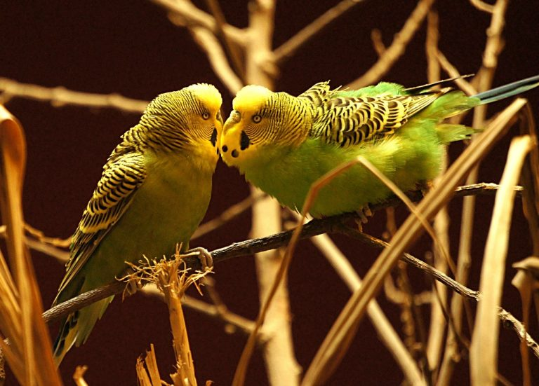

У меня есть домашний питомец — это волнистый попугайчик.
Его зовут Гоша. Он ярко-синего цвета. Только по спинке у него сбегают черненькие полоски. Поэтому попугайчик и называется волнистым.
Головка и крылышки Гоши отличаются по цвету от туловища. Они полосатые, как и спинка, но черные с белым. Гоша маленький, он даже может сидеть на моей ладони. Но у этой маленькой птички очень длинные и остренькие коготки на лапках! Поэтому не хватает терпения, чтобы удержать его хотя бы минутку.
У моего попугайчика длинный хвост. В нем несколько больших сереньких перьев, а самое длинное перо ярко-синего цвета! Вот такой Гоша разноцветный!
Мой попугайчик – это мальчик, а поэтому у него клюв голубого цвета. У попугайчиков-девочек он розовый. Под клювом у Гоши несколько черных пятнышек. А по обеим сторонам головы у него две ярко-фиолетовых пятна. Клюв у моего попугайчика крепкий и острый. Если Гоша клюется, получается очень больно.
Мой попугайчик маленький и юркий. А еще он очень смешной, когда пыжится и чистит перышки. Тогда он похож на пушистый шарик из перьев.
Несмотря на простые правила содержания, соблюдение их обязательно для сохранения здоровья и активности волнистых попугайчиков. Следует учитывать, что у пернатых есть свои потребности:
Живут волнистые попугайчики:

Более подробно о попугаях Вы можете прочитать здесь